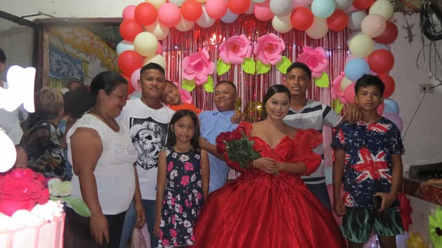

All About Me
Hi, I am Reyna M. Geraldo 20 years old, from Purok 9 Rizal Buenavista Agusan Del Norte. I’m currently a 2nd year student at Saint Michael College of Caraga, studying as Bachelor of Science Imformation and Technology.I’m excited to continue learning and growing throughout my journey. I come from a close-knit and supportive family. My family consists of eigth such as parents, siblings, and each of them plays an important role in my life. My Father name is Reynaldo Geraldo and my Mother is Arlene Geraldo, who have always been there to guide and support me. I have six siblings who I share many memories and experiences with. We enjoy spending time together, whether it’s family bonding. My family values such as kindness, hard work, and love, and they’ve always encouraged me to pursue my goals and be the best version of myself. I am grateful for their love and constant encouragement.
